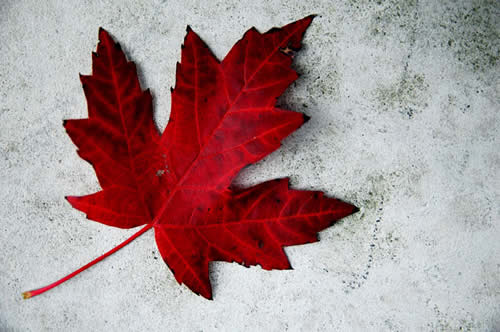

Flags in Canada
A new Canadian flag was raised for the first time in 1965. The red-white-red pattern comes from the flag of the Royal Military College, Kingston, founded in 1876. Red and white had been colours of France and England since the Middle Ages and the national colours of Canada since 1921. The Union Jack is our official Royal Flag. The Canadian Red Ensign served as the Canadian flag for about 100 years. The provinces and territories also have flags that embody their distinct traditions.
The maple leaf
The maple leaf is Canada’s best-known symbol. Maple leaves were adopted as a symbol by French Canadians in the 1700s, have appeared on Canadian uniforms and insignia since the 1850s, and are carved into the headstones of our fallen soldiers buried overseas and in Canada.
The fleur-de-lys
It is said that the lily flower (“fleur-de-lys”) was adopted by the French king in the year 496. It became the symbol of French royalty for more than 1,000 years, including the colony of New France. Revived at Confederation, the fleur-de-lys was included in the Canadian Red Ensign. In 1948 Quebec adopted its own flag, based on the Cross and the fleur-de-lys.